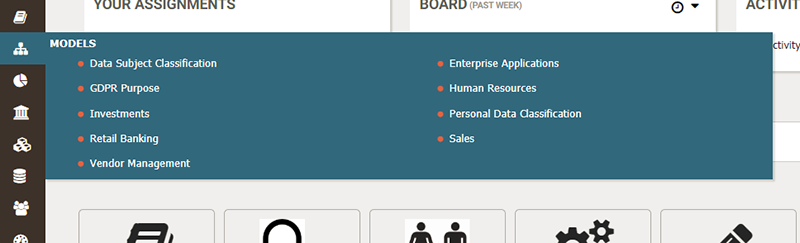
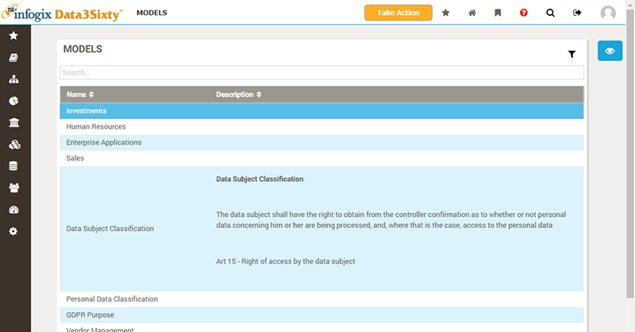
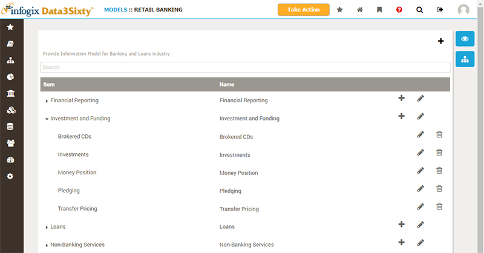
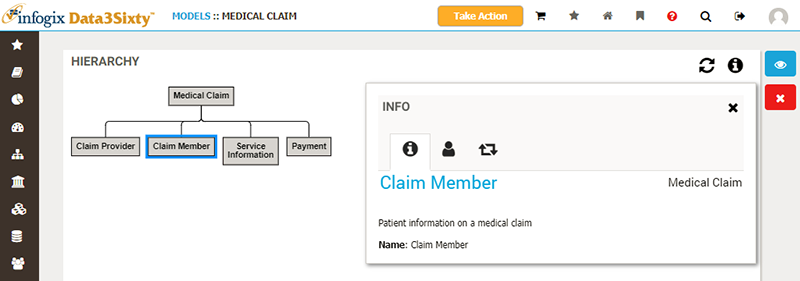
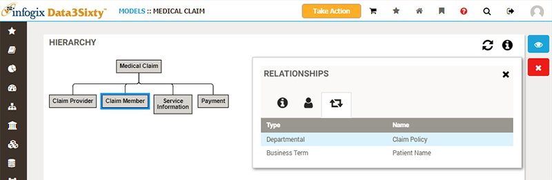
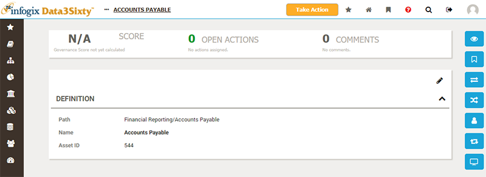

|
|
Browsing models
Hover over the Models button in the primary navigation to display a menu of the models available to you:

As with artifacts, the models you create will vary from company to company. The following models are commonly used:
- Enterprise Applications: grouping of IT systems and software used across the business
- Human Resources: grouping of HR business functions
- Domain-specific business function groupings, such as Finance, Investments, Retail Banking, Insurance, Membership, Medical Claims,etc.
You can click directly on the Models button, in the navigation bar, to show a list of all available models, together with descriptions (or other attributes which your administrator may have configured for display):

Please see the topic Filtering and exporting from tables for full details on how to work with these lists of assets.
Clicking on an item from the Model pop-up menu, or from the Models page, will display the model hierarchy:

From here, you can click on the Hierarchy Diagram button on the right of the screen to switch from the tree-list view to a diagram:
on the right of the screen to switch from the tree-list view to a diagram:

You can select an item from the diagram and then click the Information button to display a panel which lists Info, Responsibilities and Relationships for the selected item.
You can click on the large link in the Info panel to navigate to the details page for the model asset:

The Responsibilities panel will list users and groups alongside their associated responsibility for the item. These responsibilities will be inherited by an related items, unless those items have their own responsibilities explicitly assigned:
The Relationships panel will list all of the relationships created between the selected item and other assets. These can be relationships to child model assets, glossary artifacts, policies and quality rules. The example below shows an example of a model asset which is related to a glossary artifact and a policy asset:

Finally, you can navigate into an individual model asset to view the details for it:

Please see the topic Inspecting assets for an explanation of the common sections of the asset page.
You can use the Ownership and Relations buttons on the right to view and assign responsibilities and relationships to the model asset from this page.